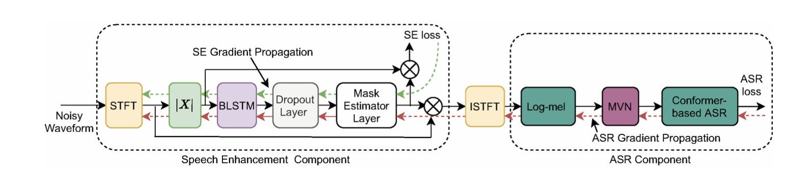
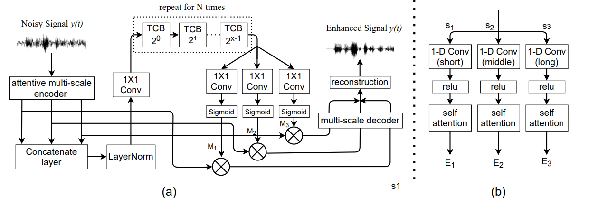
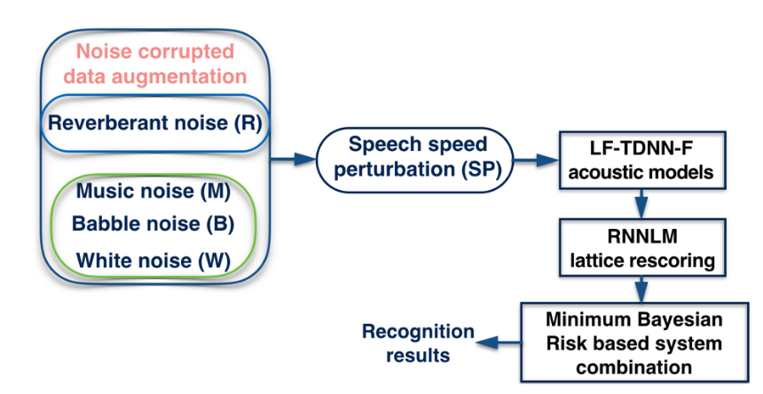

• Location: Shenzhen, China
• Email: maduo@cuhk.edu.cn
• GitHub: shanguanma
|
Sept. 2017 - Jun. 2020 M.Eng. in Computer Technology National Languages Information Technology (NLIT), Northwest Minzu University, China |
|  |
Multitask-Based Joint Learning Approach To Robust ASR For Radio Communication Speech Duo Ma, Nana Hou, Van Tung Pham, Haihua Xu, Eng Siong Chng [Part Code] [Dataset] IEEE APSIPA ASC 2021 |
|  |
Time Domain Speech Enhancement With Attentive Multi-scale Approach Chen Chen, Nana Hou, Duo Ma, Eng Siong Chng IEEE APSIPA ASC, 2021 |
|  |
Improving code-switching speech recognition with data augmentation and system combination Duo Ma, Guanyu Li, Haihua Xu, Eng Siong Chng IEEE APSIPA ASC, 2019 |
|
The Chinese University of Hong Kong, Shenzhen Aug. 2022 - Present Research Engineer (Advisor: Prof. Haizhou Li) Multimodal Self-Supervised Learning and Automatic Speech Recognition | |
|
National University of Singapore, Singapore Aug. 2020 - Jun. 2021 Research Engineer (Advisor: Prof. Haizhou Li) Joint Speech Enhancement and Speech Recognition End-to-End Optimization | |
|
Temasek Laboratories @ NTU Aug. 2018 - Apr. 2020 Research Engineer (Advisor: A/Prof. Chng Eng Song ) Hybrid Structured Speech Recognition and End-to-End Supervised Speech Recognition and Speech Enhancement |
|
Pudu Technology Inc. Jun. 2021 - Aug. 2022 Speech Algorithm Engineer Build the speech recognition link in the human-computer speech interaction system |